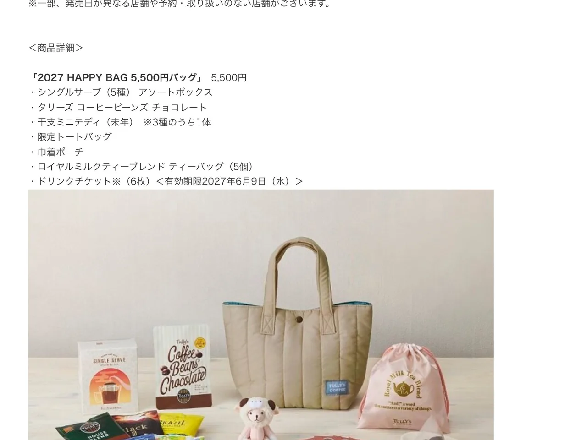

タリーズ福袋2027の店舗販売分は、予約サイトで2026年12月10日まで申し込めます。予約分の店頭受取は12月11日から17日までです。11月22日時点の公式案内では、店舗販売の価格は5,500円と10,000円で、どちらも税込です。
01店舗販売分の予約期限と上限の表記
| 項目 | 公式の案内 |
|---|---|
| 予約開始 | 2026年11月11日11時 |
| 予約締切 | 2026年12月10日 |
| 予約分の受取 | 2026年12月11日〜17日 |
| 支払い | 指定店舗で商品を受け取るとき |
| 店頭販売開始 | 2026年12月11日。一部店舗は発売日が異なる |
店舗販売分の事前予約は、公式サイトから案内されているオンライン予約システムで受け付けます。 店頭や電話での予約はできません。数量限定で、発売日が異なる店舗や、予約・販売の取り扱いがない店舗があります。
予約上限について、プレスリリースは「各種合計5個まで」と記載しています。特設ページは店舗販売分の予約案内で「各種5個までの購入」、注意事項で「1商品につき5個までのご購入」と記載しています。2種類を組み合わせた場合の上限は、資料によって表記が異なります。

02店頭での受け取り方
- 商品紹介ページの「店舗販売 2027 HAPPY BAGを予約する」から予約サイトへ進み、申込みに使うメールアドレスを入力します。
- 予約時に指定した店舗へ、12月11日から17日の受取期間内に行きます。
- 予約サイトの予約確認画面を提示し、代金を支払って商品を受け取ります。
受取時は予約サイトの予約確認画面を開きます。 画面のスクリーンショットや、氏名・メールアドレス・予約番号のみでは商品を受け取れません。
注意受取期間中に店舗で受け取らなかった場合、予約はキャンセルになります。
035,500円と10,000円の福袋の中身
| 店舗販売の価格 | 主な内容 | ドリンクチケット |
|---|---|---|
| 5,500円（税込） | 限定トート、未年の干支ミニテディ、コーヒービーンズチョコ、ロイヤルミルクティーブレンドのティーバッグ5個入り巾着、シングルサーブ5種 | 6枚 |
| 10,000円（税込） | 限定ペーパーバッグ、豆4種、シングルサーブ5種、モバイルボトル、ソフトフラッフィーブランケット | 15枚 |
5,500円のバッグのテディは未年をモチーフにした3種類のうち1体です。トートの内側にはポケットとタンブラーホルダーが付いています。

10,000円のバッグにはコロンビア トリマ、パプアニューギニア イーストハイランド、ブラジル バウ レッド＆イエローブルボン、ウガンダの豆が各140g入ります。モバイルボトルは実容量180mlで、3色のうち1本が入り、色は選べません。
04ドリンクチケットの使い方と期限
どちらのセットも、チケットの有効期限は2027年6月9日です。 店頭で提示すると、店内飲食と持ち帰りのどちらでも、1枚で税込520円までのドリンク1杯と交換できます。520円を超えるときは差額を支払います。券の金額を下回ってもおつりは出ません。
一会計につき使えるのは3枚までです。セットメニューや割引チケットとの併用はできません。チケットが使えない店舗もあります。
05よくある質問
店舗販売の福袋は店頭で予約できますか？
事前予約はオンラインのみです。タリーズの商品紹介ページから予約サイトを開きます。
店舗販売分は何個まで予約できますか？
プレスリリースは「各種合計5個まで」、特設ページは「各種5個まで」および「1商品につき5個まで」と案内しています。2種類を組み合わせた場合の上限は、資料によって表記が異なります。
予約確認画面のスクリーンショットで受け取れますか？
スクリーンショットでは受け取れません。指定の店舗で予約サイトの予約確認画面を表示します。
520円を超えるドリンクにも使えますか？
チケットの金額を超えた分を支払えば利用できます。チケット1枚でドリンク1杯に使えます。
06まとめ
結論店舗販売分は12月10日までにオンラインで予約し、12月11日から17日までに指定した店舗で受け取ります。
受取時は予約サイトの確認画面を提示し、店頭で決済します。チケットは両セットとも2027年6月9日までです。食品系の福袋はゴディバ福袋2027の案内も参照できます。